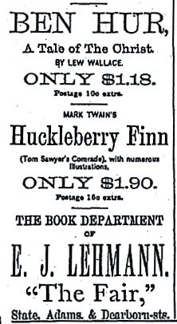

){kind=link}

for Huck Finn (21 June 1885)  CLICK TO SEE WHOLE AD |
Because subscription publishers charged so much for their titles, it was crucial for them to be able to say a book was "sold only by subscription." At the same time, individual agents often tried to increase their income by surreptitiously selling books under cost to bookstores and other outlets. Even before Adventures of Huckleberry Finn was published, MT sued a Boston bookseller who was advertising the novel for half a dollar less than what subscription customers had to pay. The case was widely reported in the press: Mark Twain a Plaintiff (15 January 1885) Mark Twain's Latest Work (15 January 1885) Even as he was winning this suit, however, MT apparently kept planning to sell his novel to retailers once he felt the subscription market had been exhausted. By the end of May, 1885, the novel was on sale in stores. The ad at left appeared in June, announcing various kinds of "Summer Reading" available at The Fair, one of the new-fangled Chicago "department stores" that were transforming the habits of American consumers at this time. The Fair's advertised price of $1.90 was 85¢ less than the cheapest copy "sold by subscription." |